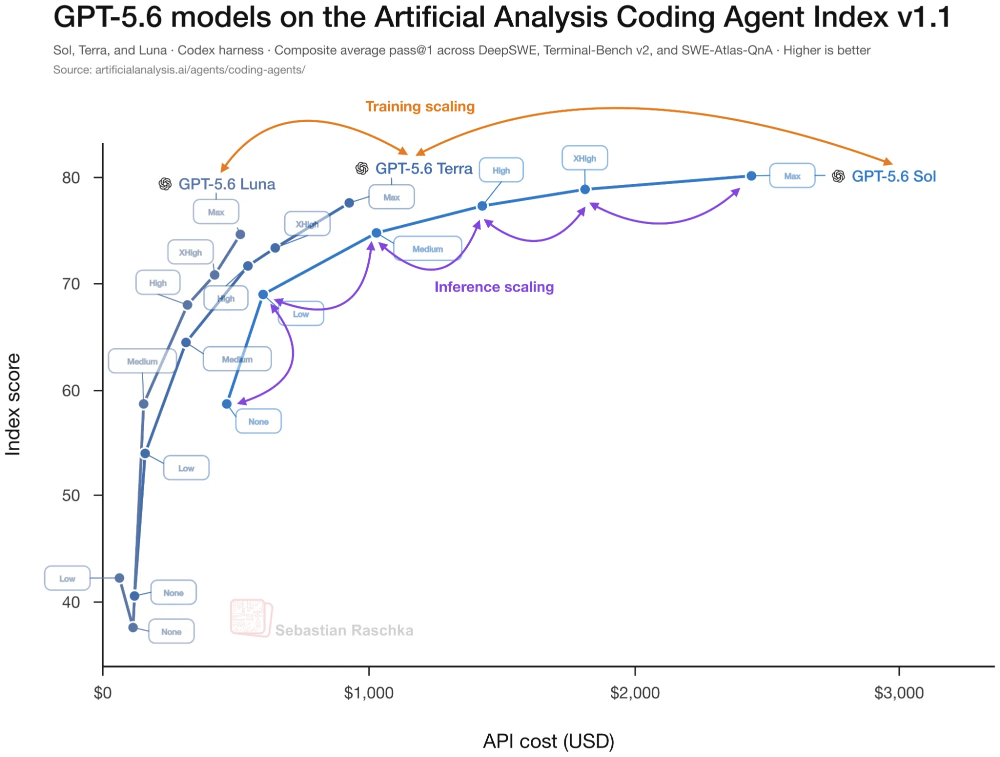
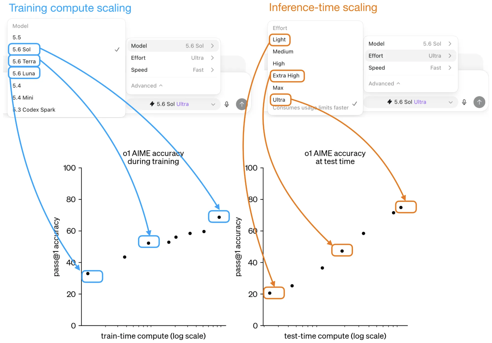

Scientific Computing Practice
GPT-5.6 Reasoning for Scientific Engineering
Literature reproduction is not one task. It alternates between reading an incomplete methods section, designing a computational workflow, editing routine inputs, diagnosing numerical failures, monitoring long calculations, and auditing a final conclusion. Using maximum reasoning for every stage wastes quota without making every stage safer. A better policy independently assigns model capability, inference-time effort, agent orchestration, and processing priority to the current workload.
1. Two independent scaling axes
The GPT-5.6 family exposes two conceptually different ways to spend computation. Choosing among Sol, Terra, and Luna changes the model: Sol targets frontier capability, Terra balances intelligence and cost, and Luna targets efficient high-volume work. Changing reasoning effort keeps the selected model and changes how much inference-time reasoning it is encouraged or allowed to use.
These axes should not be conflated. Moving from Luna to Sol is a model-capability decision; moving from medium to high is a test-time-compute decision. The public benchmark pattern is consistent with both training-time and inference-time scaling, but a cost-quality curve does not reveal the proprietary architecture or training recipe behind it.

2. What a reasoning level means—and what remains unknown
OpenAI documents reasoning effort as a control over how much the model thinks. Lower effort favors latency and lower token use; higher effort permits more complete reasoning, while the model still adapts token use to task difficulty. Public reinforcement-fine-tuning documentation also states that effort can limit the number of reasoning tokens used during training or evaluation.
This supports a conservative interpretation: reasoning effort selects a point on a quality-latency-cost frontier. It does not establish that each level is merely a different prompt, nor that GPT-5.6 was trained with one known length-penalty coefficient per level. Plausible mechanisms include control tokens or system instructions, reasoning-token budgets, learned stopping behavior, decoding controls, and reinforcement-learning objectives that trade task reward against computation. The exact GPT-5.6 implementation is not public.
It is also important to distinguish visible answer length from internal reasoning use. A high-effort run may return a concise answer after substantial hidden reasoning. Therefore, “higher effort means longer output” is not a reliable model of the product.

3. Four controls that should not be conflated
Model selection and reasoning effort are only two of the available controls. Agent orchestration determines whether one agent works alone or delegates independent scopes to subagents. The service tier determines how quickly the model-serving infrastructure processes each request. These controls are related operationally, but they are not interchangeable.
| Control | What it changes | What it does not imply |
|---|---|---|
| Model: Sol, Terra, or Luna | Base capability, cost, and workload fit | A fixed amount of reasoning for every prompt |
| Reasoning effort: Medium, High, or Extra High | Inference-time reasoning budget and behavior | Automatic parallelism |
| Orchestration: single agent, explicit delegation, or Ultra | Whether independent scopes run through subagents | That every task is safe or useful to parallelize |
| Service tier: Standard or Fast | Serving priority, latency, and price per token | A smaller model or reduced reasoning effort |
Current Codex documentation describes Ultra as more than a higher reasoning setting: it can proactively delegate work to subagents when parallel execution should materially improve speed or quality. At most other intelligence levels, including High, delegation can still be used when the user explicitly requests it or when applicable project instructions authorize it. High plus a precise delegation plan can therefore be sufficient for a broad, separable project; Ultra mainly changes how proactively the system considers multi-agent execution.
Fast mode is a separate serving decision. It was previously called Priority processing and uses the fast or priority service tier. OpenAI reports up to 2.5 times faster processing for GPT-5.6 Sol, with more consistent latency and a per-token premium. The public documentation does not disclose whether the lower latency comes from reserved accelerators, smaller batches, speculative decoding, or another serving optimization. The defensible interpretation is therefore a higher-priority processing lane for the same model and reasoning configuration—not less thinking disguised as speed.
Fast processing accelerates model turns, not the entire research wall clock. Web servers, platform rate limits, simulations, test suites, downloads, human approvals, and sequential safety gates remain external bottlenecks. A workflow with substantial tool time will consequently realize less than the headline model-serving speedup.
4. The workload map for scientific projects
| Work stage | Default effort | Escalate when |
|---|---|---|
| File organization, path edits, plotting, report formatting | Medium | The transformation changes scientific meaning |
| Routine implementation, tests, input generation, log inspection | High | Evidence points to a cross-module or numerical cause |
| Extracting equations, assumptions, and parameters from a paper | High | The paper is internally ambiguous or omits a decisive detail |
| Workflow design and expensive-compute decisions | High | Several plausible designs have materially different scientific risks |
| Persistent disagreement with a published result | Extra High | A minimal case remains unexplained after controlled diagnostics |
| Core theoretical contradiction or stubborn numerical pathology | Extra High | Delegate independent hypotheses when they can be tested separately |
| Broad multi-source or multi-platform investigation | High with explicit subagents | Use Ultra when proactive decomposition materially improves the workflow |
| Final evidence audit | Extra High | Use independent reviewers without parallelizing the final decision |
5. Recommended operating policy
For a long literature-reproduction project, Sol at High is a strong default when the model is acting as both project manager and primary engineer. Medium is appropriate for mechanical execution. Extra High is best treated as a technical-review mode. Ultra is most useful when a large task contains genuinely independent workstreams; it should not be treated simply as a permanent maximum-reasoning setting.
- Start at High and build a staged plan with explicit validation gates.
- Drop routine transformations and documentation to Medium.
- Before escalating, collect the smallest failing case, relevant equations, inputs, recent logs, and competing hypotheses.
- Use Extra High to decide among hypotheses or to design the decisive test.
- Use Ultra when several independent research or implementation scopes can run concurrently and their outputs can be reconciled against a common contract.
- Return integration, safety decisions, and final verification to one accountable main agent.
The compact rule is: Medium executes, High manages and engineers, Extra High reviews difficult decisions, and Ultra orchestrates parallel work when decomposition is genuinely useful.
6. Parallelize reconnaissance, serialize risky validation
A boundary-mapping project across many semi-closed information platforms illustrates the distinction. Separate planning, implementation oversight, and acceptance agents can improve evidence quality, yet a workflow may still remain slow if each platform is forced through a complete approval gate before the next platform begins. That serialization is a governance choice, not a limitation of High reasoning.
The efficient pattern is hybrid. Parallel subagents can inspect public documentation, identify open-web entry points, build candidate-URL ledgers, prepare offline parsers, and design fixtures for different platforms. Live probes involving login state, rate limits, anti-bot responses, or shared safety controls should remain bounded and centrally coordinated. Shared schemas and final capability claims should also be integrated by one agent so that platform-specific success is not promoted into an unsupported platform-wide claim.
An explicit High-level instruction can request one independent scope per platform, prohibit agents from editing shared files, and reserve live validation for the main agent. Ultra may propose this decomposition proactively, but it still cannot override project instructions, concurrency limits, credential boundaries, or stop conditions. A practical rule is: parallelize read-only reconnaissance and offline construction; serialize credentialed access, risk stops, shared-state integration, and final approval.
7. A reproducible escalation diagnostic
Before increasing effort, record five fields:
- Blocker: the single decision or failure preventing progress.
- Evidence: the minimal input, output, equation, or trace that demonstrates it.
- Exclusions: causes already tested and ruled out.
- Decision: what the higher-effort run must determine.
- Acceptance test: the observation that will confirm or reject the result.
If these fields cannot be filled, the immediate need is usually better instrumentation rather than more reasoning. This diagnostic prevents an expensive model from spending its budget rediscovering project context or exploring an unbounded space.
8. Long calculations need monitoring, not more reasoning
A simulation that runs for hours does not become safer because its initiating conversation used Ultra or Fast mode. Reliability comes from explicit supervision: verify that the process remains alive, outputs continue to update, storage and memory remain safe, and the physical or numerical diagnostics behave as expected. Examples include energy conservation in NVE, temperature stability in NVT, SCF convergence, trajectory integrity, loss curves, and residual trends.
For expensive electronic-structure or molecular-dynamics campaigns, define the minimum downstream output set, run a smoke test, inspect actual file growth, and only then submit the full batch. Reasoning effort helps design these controls; it does not replace them.
9. Encoding the policy in AGENTS.md
Project instructions can classify tasks, require evidence before escalation, and authorize bounded delegation when the environment supports it. At High and most other levels, an explicit request to delegate independent work is the clearest way to obtain subagents; Ultra may initiate that delegation proactively. Project instructions cannot reliably change the active main-thread reasoning selector or service tier by themselves, so they should require Codex to state the recommended configuration rather than claim that it silently switched controls.
A reusable policy fragment is available as gpt-5-6-reasoning-policy.md. The main task can remain at High while explicit subagents receive independent, testable scopes. Extra High is reserved for difficult judgments; Ultra is reserved for proactive multi-agent orchestration. The main agent should integrate and verify every returned result.
10. Model selection beyond Sol
Sol is justified when errors are expensive: interpreting a difficult paper, designing a multi-stage workflow, debugging coupled numerical software, or auditing a physical conclusion. Terra is a reasonable candidate for broader engineering work when repeated evaluations show comparable project outcomes at lower cost. Luna fits high-volume, well-specified transformations and screening tasks. The correct choice should be based on a small project-specific evaluation set rather than a global leaderboard alone.
A useful evaluation set contains representative tasks such as:
- extracting all reproducibility-critical parameters from one methods section;
- finding a deliberately inserted inconsistency across input files;
- diagnosing a known failed calculation from a trimmed log;
- proposing a validation plan with physical and numerical checks;
- editing a routine configuration without changing scientific semantics.
Measure task success, missed evidence, unnecessary tool calls, total latency, and usage—not answer eloquence. A lower-cost model or effort is preferable whenever it passes the same acceptance tests.
Conclusion
Scientific engineering benefits from adaptive inference compute, but only when it is allocated deliberately. Model choice, reasoning effort, subagent orchestration, and serving priority are four different controls. For sustained reproduction work, High is the practical center of gravity and can use subagents when delegation is explicit. Medium handles mechanical execution, Extra High handles consequential judgment, Ultra proactively orchestrates separable work, and Fast reduces model-serving latency without replacing scientific validation. The most important optimization is not choosing the largest or fastest setting—it is turning an open-ended research problem into bounded decisions, parallelizing only independent work, and preserving explicit evidence and acceptance tests.
References
- OpenAI, Reasoning models: reasoning effort.
- OpenAI, GPT-5.6 model guidance.
- OpenAI, Reinforcement fine-tuning: training metrics.
- OpenAI, Learning to reason with LLMs.
- Artificial Analysis, Coding Agent Index.
- OpenAI, Codex subagents.
- OpenAI, Codex models and Ultra mode.
- OpenAI, Fast mode.